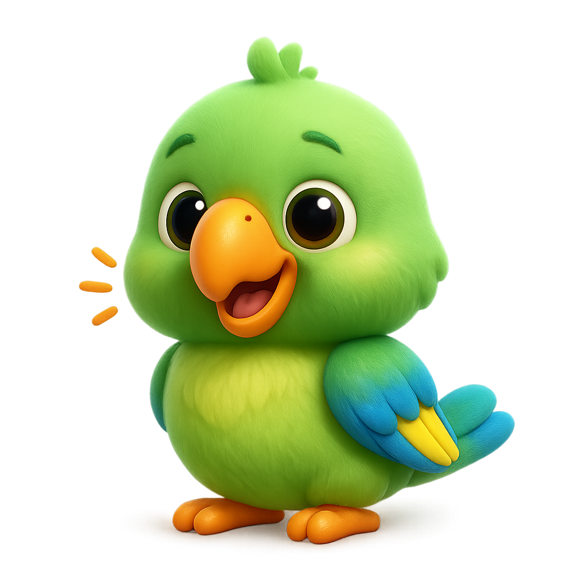
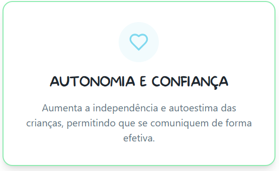
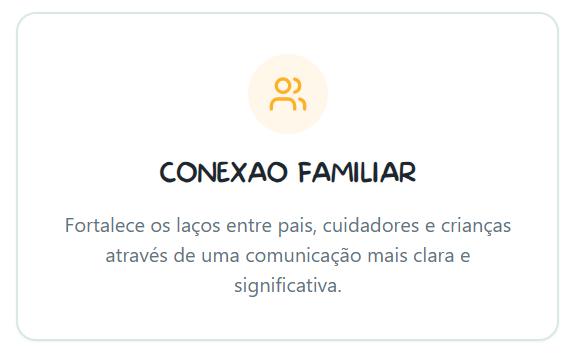
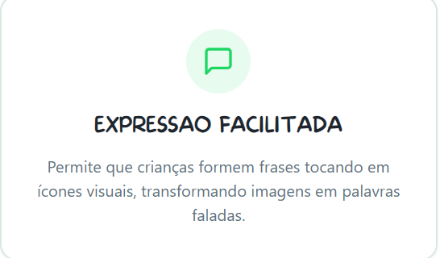
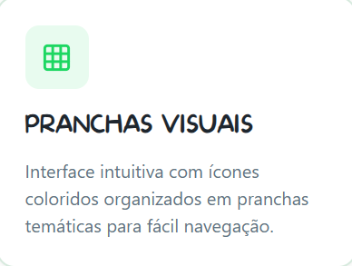
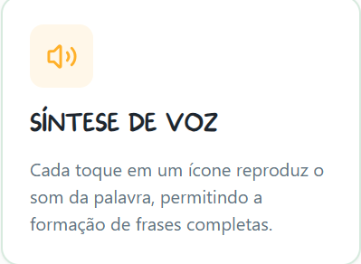
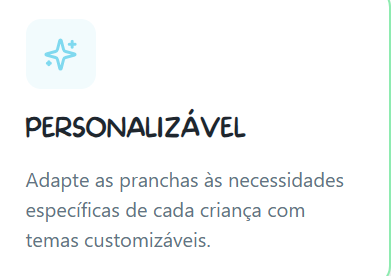

A CAA é um conjunto de ferramentas e estratégias que ajudam pessoas com dificuldades de comunicação a expressar seus pensamentos, necessidades e sentimentos.



Uma solução simples e eficaz para transformar a comunicação em algo natural e divertido.


